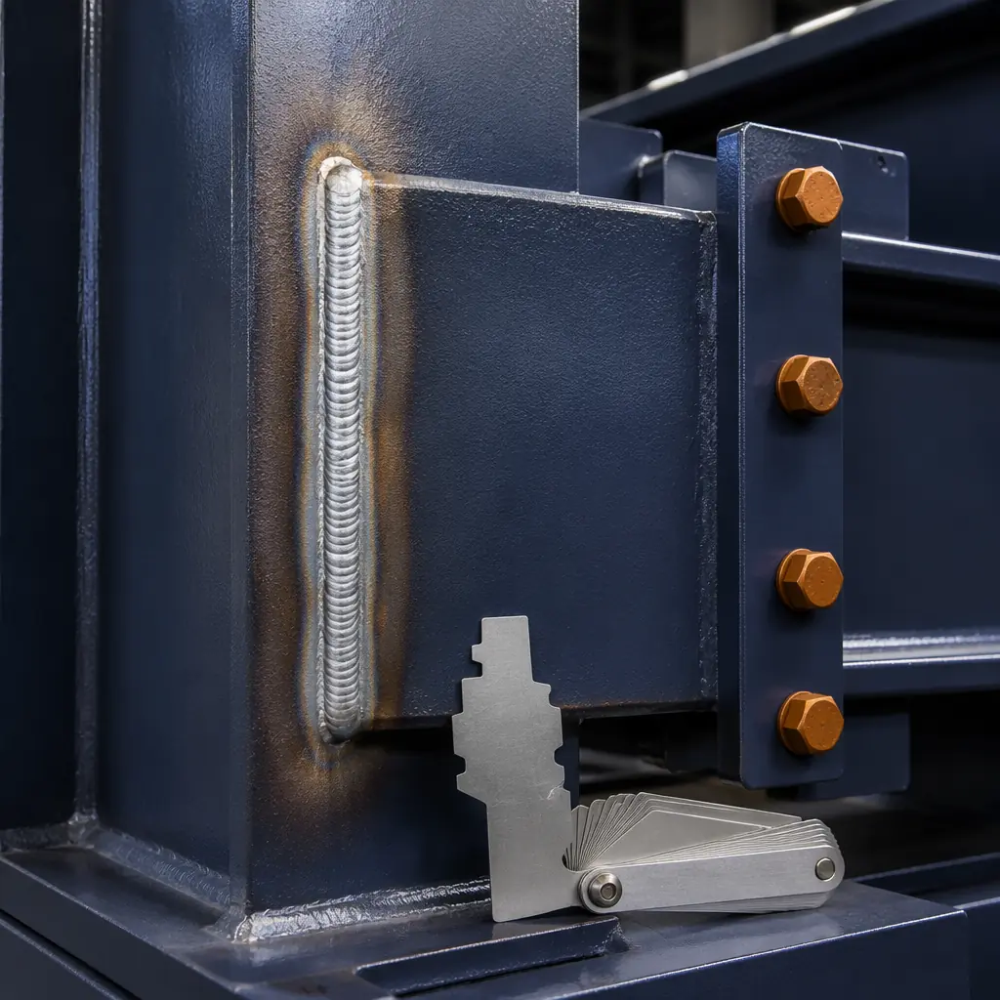
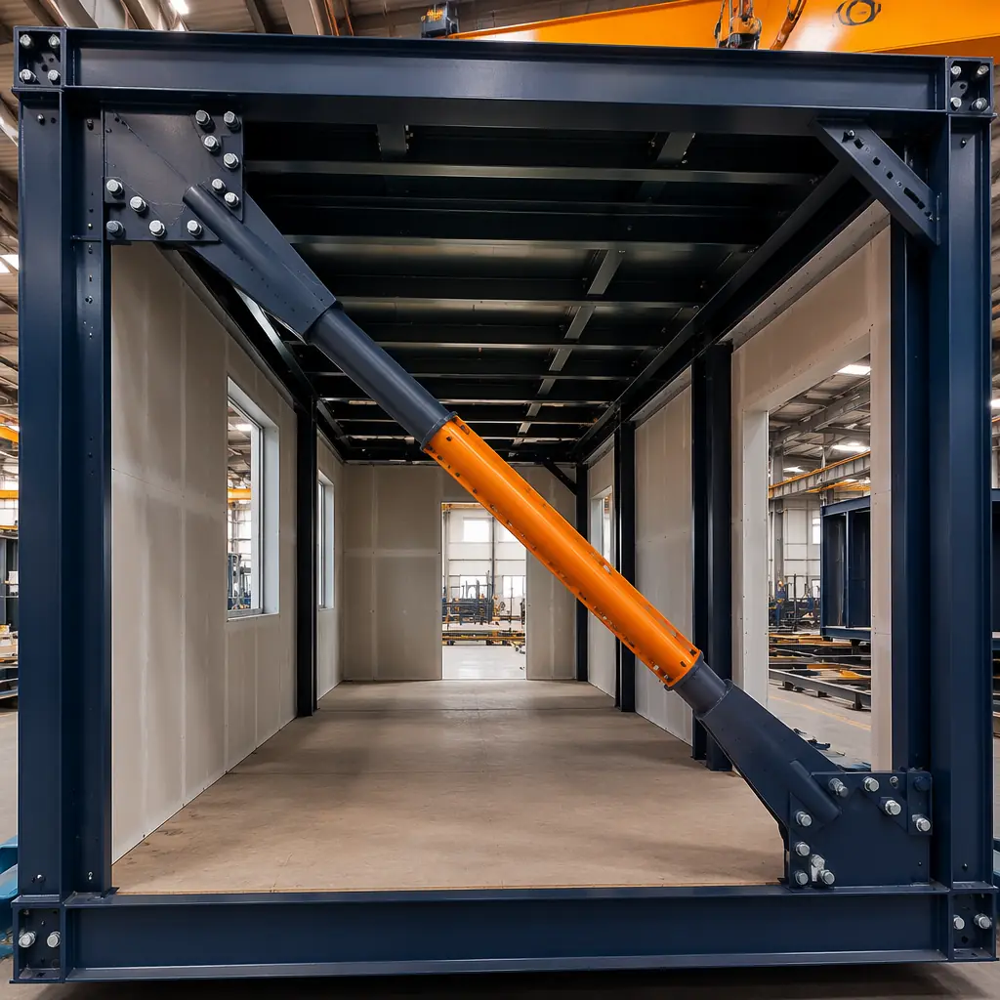
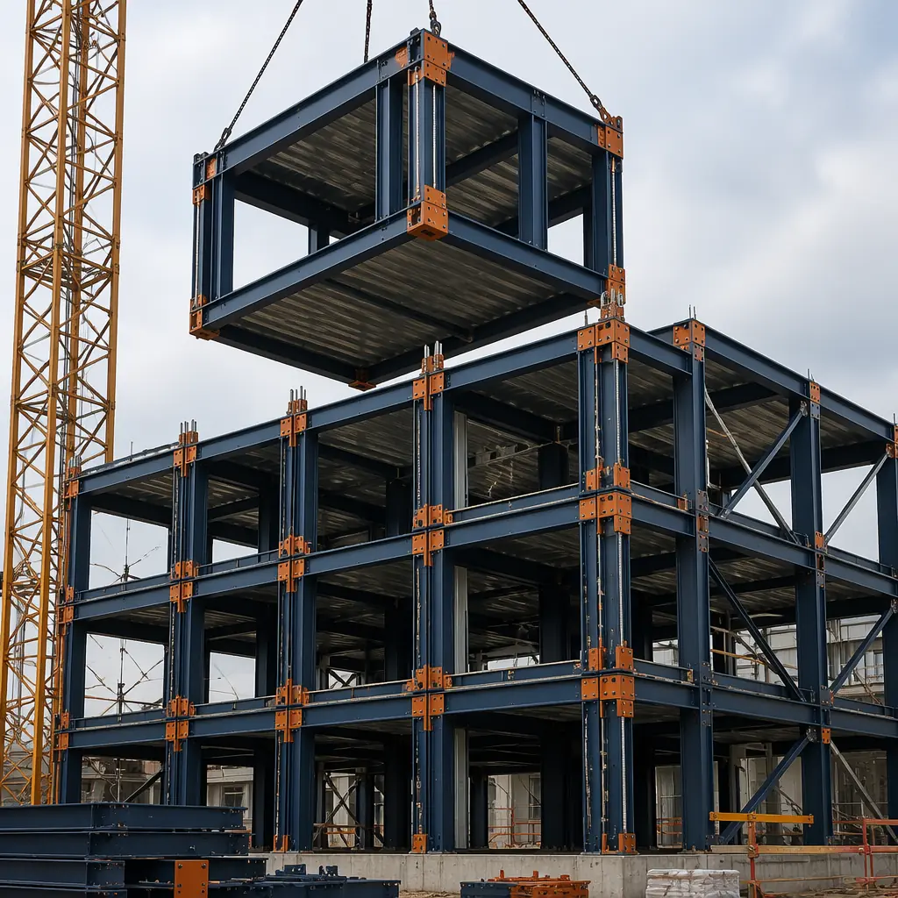

When a magnitude 7.0 earthquake strikes, the difference between a building that survives and one that collapses is measured in millimeters of steel deformation — specifically, how much plastic deformation the structural connections can absorb before fracture. For developers building in California's Seismic Design Category E, Japan's high-seismicity zones, New Zealand's active fault regions, or Turkey's earthquake-prone provinces, this is not an academic question. It is the single most important engineering decision in the project. Modular construction, with its factory-welded steel moment frames and controlled connection quality, offers seismic performance characteristics that site-built construction struggles to match. This article examines the engineering, testing, and design strategies that make modular buildings genuinely earthquake-resistant — not just code-compliant.

Why Steel Modular Frames Excel in Seismic Loading: The Ductility Advantage
Earthquakes damage buildings through lateral force — the ground accelerates sideways, and the building's mass resists that acceleration, creating shear forces at every structural connection from foundation to roof. A building survives an earthquake not by being strong enough to resist these forces elastically (that would require impossibly heavy construction), but by being ductile enough For a deeper look, our turnkey modular construction — the deve… guide covers the details. to absorb seismic energy through controlled plastic deformation without losing load-carrying capacity.
Steel is the most ductile structural material available. A properly detailed steel moment frame can undergo 4–6% interstory drift — meaning a 10-ft story height can sway 5–7 inches laterally — and return to its original position with no permanent damage. Concrete, by comparison, is brittle: a reinforced concrete frame typically fails at 1.5–2% drift, and tilt-up concrete panels can spall or separate at panel joints well below that threshold.
Modular construction amplifies steel's inherent ductility in three specific ways:
- Factory-welded moment connections. Site-welded steel connections depend on the welder's skill, weather conditions, and inspection access — all of which vary. Factory-welded connections are produced under controlled conditions with documented welding procedure specifications (WPS), pre-heat when required, and 100% ultrasonic testing of complete-joint-penetration welds. The result is a connection with predictable, tested deformation capacity — not one whose quality varies with the wind and the welder's fatigue level. Factory QC systems ensure every welded joint meets AWS D1.1 structural welding code requirements.
- Redundant load paths through module connections. In a modular building, each module is a complete structural box with its own moment-resisting frame. When modules are stacked and connected, the inter-module connections create redundant load paths — if one connection begins to yield, adjacent connections pick up the load. This redundancy is fundamental to seismic design (ASCE 7 requires it for Seismic Design Categories D, E, and F), and modular construction achieves it inherently through the module-to-module connection pattern.
- Lower mass per unit volume. A steel-framed modular building weighs approximately 60–70% of an equivalent concrete structure. Since seismic force is proportional to mass (F = ma), a lighter building experiences proportionally lower seismic forces — reducing the demand on every structural element from foundation to roof. Multi-story modular buildings benefit particularly from this mass reduction.

ASCE 7 Seismic Design Categories: What Each Level Requires
The International Building Code (IBC) references ASCE 7 for seismic design requirements, which classifies every building site into a Seismic Design Category (SDC) from A (lowest risk) to F (highest risk). The SDC is determined by mapped spectral acceleration values (Ss and S1) combined with the site's soil classification. A modular building's structural system must be engineered for the specific SDC of its installation site:
| SDC | Seismic Risk | Key Engineering Requirements | Modular Approach |
|---|---|---|---|
| A | Very low | Basic lateral system, no special detailing | Standard module connections with bolted inter-module ties |
| B | Low | Lateral system with minimum base shear | Standard connections, diaphragm chord reinforcement |
| C | Moderate | Detailed lateral analysis, drift limits | Engineered hold-downs at module corners, diaphragm design |
| D | High | Special moment frames or shear walls, redundancy requirements, 2% drift limit | Full moment-resisting frame design, inter-module shear transfer connections, continuous tie-downs through stacked modules |
| E | Very high | Special seismic systems only, strict drift limits, near-fault factors | Buckling-restrained braced frames within modules, base isolation compatible module design, near-fault pulse engineering |
| F | Maximum | Site-specific ground motion analysis, maximum considered earthquake (MCE) verification | Performance-based design with nonlinear time-history analysis, customized connection detailing for site-specific spectra |
For SDC D, E, and F — which cover all of coastal California, the Pacific Northwest, Alaska, Hawaii, and the New Madrid seismic zone in the central US — modular buildings require special seismic systems with documented testing. Acoustic performance and fire safety requirements must be integrated into the seismic design without compromising either system.
Shake Table Testing: What Full-Scale Modular Building Tests Reveal
The most credible evidence for modular seismic performance comes from full-scale shake table testing — where a complete multi-story modular building is constructed on a hydraulic platform and subjected to earthquake ground motions ranging from service-level to maximum considered earthquake (MCE) intensity. The University of California, San Diego's NEES shake table (the largest in the US) and Japan's E-Defense facility have both conducted modular building tests with consistent findings:
- Inter-story drift concentrated at module-to-module connections, not within modules themselves. The modules behaved as essentially rigid bodies, with all deformation demand absorbed by the horizontal and vertical connections between modules. This is favorable behavior — it means the energy dissipation is concentrated in designed, tested connection details rather than in unpredictable locations.
- No connection fracture at MCE-level shaking in properly detailed special moment frame connections. At 1.5× MCE (beyond code-required survival), some connection yielding was observed but no fractures — the connections maintained load-carrying capacity through multiple cycles of inelastic deformation.
- Residual drift under 0.2% after MCE-level shaking, well within the 0.5% threshold considered repairable per FEMA P-58 performance assessment methodology. The building was functionally undamaged after design-level earthquake shaking and repairable after MCE-level shaking.
These results exceed the performance of site-built steel moment frame buildings tested under comparable protocols, primarily because factory-welded connections eliminate the fit-up gaps, weld access issues, and inspection variability that compromise site-welded seismic connections. MBI Permanent certification requires documented seismic engineering capability including PE-stamped calculations for the building's design SDC.

Key Connection Details That Make Modular Buildings Earthquake-Resistant
Seismic performance in modular buildings is determined by four connection types, each engineered for specific force transfer demands:
- Module-to-foundation hold-downs. At the building base, each module corner is anchored to the foundation with high-strength threaded rods or post-tensioned bars that extend through the module's corner columns. For SDC D and above, these anchors are designed for the full uplift force calculated from the seismic overturning moment — typically 40–80 kips per corner for a 4-story building. The anchor embedment depth, concrete breakout capacity, and steel yielding are all verified per ACI 318 Appendix D.
- Horizontal inter-module shear connections. Adjacent modules on the same floor transfer seismic shear through bolted connections at the module corners. The connection detail typically uses a shear plate welded to one module's corner column in the factory, field-bolted to the adjacent module's column through slotted holes that accommodate ±3 mm of module positioning tolerance. The bolts are pre-tensioned to develop slip-critical behavior — meaning the connection transfers shear through friction rather than bolt bearing, eliminating the pinched hysteresis that degrades energy dissipation in bearing-type connections.
- Vertical inter-module tension ties. Modules stacked vertically must resist seismic overturning forces that create tension at the windward side and compression at the leeward side. Continuous tie-down rods run through aligned corner columns from roof to foundation, tensioned to 70% of their ultimate tensile strength. This post-tensioning compresses the module stack, increasing the slip-critical shear capacity of horizontal connections and providing a self-centering mechanism that reduces residual drift after an earthquake.
- Diaphragm connections at floor and roof levels. The horizontal diaphragm — typically a steel deck with concrete topping or structural plywood on steel joists — transfers seismic forces from the building's mass to the vertical lateral-force-resisting system. In modular construction, the diaphragm is discontinuous at module boundaries, so splice plates are field-welded or bolted across module joints to create a continuous load path. The splice design must transfer the full diaphragm shear demand, typically 300–600 plf (pounds per linear foot) for SDC D buildings.
Building envelope systems and MEP integration must accommodate the inter-story drift these connections allow — typically 25–50 mm (1–2 inches) — without compromising weatherproofing or utility connections.
Cost Implications: The Seismic Design Premium
Engineering a modular building for high-seismicity zones adds cost compared to low-seismicity design, but the premium is generally lower than for equivalent site-built structures because modular's inherent structural characteristics — steel framing, factory-welded connections, redundant load paths — already provide much of what seismic design requires. The incremental cost by SDC:
| SDC | Cost Premium Over SDC A | Primary Cost Drivers |
|---|---|---|
| A–B | Baseline | Standard module engineering |
| C | +3–5% | Hold-down detailing, diaphragm analysis |
| D | +8–12% | Special moment frames, connection testing, PE review |
| E | +15–20% | Buckling-restrained braces, near-fault engineering, peer review |
| F | +20–30% | Site-specific ground motion, nonlinear analysis, performance-based design |
These premiums compare favorably to site-built steel construction, where SDC E design typically adds 25–35% over baseline. Modular's factory production absorbs much of the connection detailing cost that site-built projects incur through field labor. Our cost-per-square-foot guide provides detailed pricing by building type and SDC.
For developers, the most important seismic design decision is not modular vs site-built — it is specifying performance objectives beyond code minimums For a deeper look, our sustainable by design guide covers the details.. Code compliance means the building will not collapse in an MCE-level earthquake and occupants can evacuate safely. It does not mean the building will be usable afterward. Specifying immediate occupancy performance per FEMA P-58 — meaning the building can be reoccupied within hours of a design-level earthquake — requires engineering beyond code minimums. Modular construction's factory-controlled connection quality makes this higher performance objective achievable at a lower premium than site-built alternatives.

Integrating Seismic Design with Other Performance Requirements
Seismic design does not exist in isolation. A building that survives an earthquake but burns down because fire-rated assemblies were compromised by seismic detailing, or one that stands but has no functional MEP systems because rigid piping fractured at 2% drift, has failed its occupants. Modular construction's factory integration allows these systems to be designed together:
- Fire-rated assemblies. Inter-module fire barrier joints must accommodate the seismic gap — typically 25–50 mm of movement — while maintaining fire resistance for the rated duration (1–2 hours). Factory-installed intumescent sealant systems, tested to ASTM E1966 for fire-resistant joint systems, expand when exposed to heat to fill the movement gap. Our fire safety guide covers fire-rated assembly integration.
- MEP systems. Piping, conduit, and ductwork crossing module boundaries require flexible couplings rated for the design inter-story drift. Braided stainless steel flexible connectors for plumbing (3–6 inches of axial movement capacity), looped electrical conduit with service slack, and fabric duct connectors for HVAC are standard specifications for SDC D and above. MEP systems integration details these requirements.
- Building envelope. Exterior cladding at module joints must accommodate seismic movement without tearing weather barriers. Factory-installed EPDM gaskets with 50 mm of compression/extension capacity, tested to AAMA 501.4 for dynamic water penetration, maintain weathertightness through design-level drift.
For developers building in earthquake country, modular construction offers a structural system whose seismic performance is engineered into every factory-welded connection — not dependent on field conditions. Insurance and risk management implications of seismic design choices can significantly affect project financing and long-term operating costs. For projects in seismically active regions, evaluating a modular manufacturer's seismic engineering capability should be a mandatory step in partner selection — ask for PE-stamped calculations for your project's SDC and full-scale connection test reports before signing a contract.